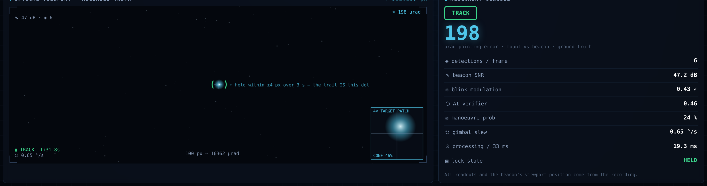

Proposed Solution (Describe your Idea/Solution/Prototype)
The eyes and neck of a laser-communication terminal
A physics-true virtual test-range, plus the pointing brain that finds the beacon, proves its
identity and holds it — built, measured and running today.
ISRO · PS 26169
every figure below is measured, not projected
Detailed explanation of the proposed solution
1
SEE
A physics-true sky — stars, cloud, clutter and sun-glint rendered through the same optics as
the beacon, on a real ISS orbit.
9.2 MPx/s · 30 fps · SGP4 orbit
2
IDENTIFY
The beacon proves who it is by blinking at an agreed 4 Hz. A brighter star cannot fake it —
it scores zero.
0 wrong locks in 64 runs
3
PREDICT
The camera only ever shows the past. An IMM motion model plus a Smith predictor aim where the
beacon will be.
40 ms of mount delay cancelled
4
STEER
Pan-tilt commands go out every single frame; the loop re-measures and corrects, continuously.
8–21 ms of the 33 ms budget
Innovation and uniqueness of the solution
Brightness is not identity — modulation is.
The one hard gate every candidate must pass before the tracker will lock on to it.
Star / sun-glint
brighter, steady light
4 Hz score ≈ 0 · fails gate
REJECTED
Our beacon
dimmer, blinking at 4 Hz
4 Hz score 0.47 · passes
LOCKED
A decoy can be brighter, closer and moving — it still cannot blink on the agreed
signature. That single gate is why the tracker locked a wrong target 0 times in 64 randomised
runs, and it costs no extra hardware.
How it addresses the problem

Our replay console, mid-pass on a real SGP4 ISS orbit — the same view the live demo
link opens on a judge's phone. Every value is read from a logged run of the engine.